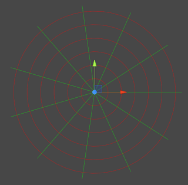

A first look at polar grids
Category: progress
Tags: old-blog
I've been working on the next type of grid: polar grids. The polar grid is based on polar coordinates, meaning instead of identifying a point's position using X and Y coordinates we use a radius and an angle. The radius tells us how far from the origin the point is and the angle tells us the direction. This screenshot shows the new polar grid in Unity

A polar grid is defined by three values: radius, sectors and depth. Radius refers to how far apart the red circles in the picture are, sectors is how many sectors you have and depth is how far apart each two layers of a polar grid are. Since we have a third dimension the mathematically correct term would be a "cylindrical grid", but I'll call it polar just for the sake of simplicity. If you have cylindrical coordinates just ignore the third component and you get polar coordinates. You'll notice that the angle between sectors does not define the grid, because the sectors have to cover the grid completely; you can't have the last sector be only a third of the other sectors. I'll see if I can still make the angle adjustable via an accessor.
Polar grids have a few unique quirks that differentiate them from rectangular and hex grids. First of all we now have circles instead of straight lines, but we can't draw actual circles. My solution is to add a "smoothing" option; without smoothing the red lines inside the sectors will be all straight and the grid will look like a spider's web, but each increase in smoothing breaks up the line into more segments, coming closer to a round shape. Of course increasing the smoothing means that there will be more points to calculate, but fortunately a single-digit number is already enough to get a smooth look. Also, the more sectors you have, the less smoothing you need.
A more fundamental issue rather than just a cosmetic concern is the coordinate systems. Yes, plural. The first one is the regular cylindrical coordinate system where radius, angle and height are given as absolute from the origin with respect to world dimensions. This means, no matter what you set your grid's radius, sectors or depth to, a given point will always have the same coordinates. The other one is a grid coordinate system where each component represents the relative position inside the grid with respect to radius, angle (calculated from sectors) and depth. Changing the grid also changes the coordinates of a given point.
You can convert between both coordinate systems and world space on the fly and neither system is really "better" than the other. It would be just wrong to have a polar grid without polar coordinates and it is what you want to use when moving objects in the world. On the other hand, it you want to think in "grid space", it's easier to think in terms of fields, like a board game, so grid coordinates appear more intuitive.
At this point all the math is done and the hardest to implement methods (drawing, coordinate transformation and finding nearest vertex/face/box in all three coordinate systems) have been written. The next parts should be easier to implement, but I'm not exactly sure how to design them (what exactly does "aligning" in a polar grid even mean?). I'll keep you updated once I have more to show.